scene layout
场景布局相关研究
- indoor scene datasets
- scene graph / scene text to image generation / indoor scene synthesis
- capsule networks
indoor scene datasets
-
SUNCG(until now, 2021-01-10) - scannet
- scenenet
- scenenet RGBD
- 由于随机生成场景时是”从空中往下落”的设定，很多random的场景重度散乱，渲染是realistic了，场景布置非常non-realistic
不过那57个manual的场景还是足够真实的 - 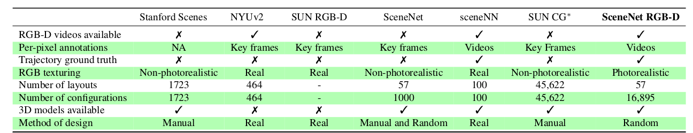
- 由于随机生成场景时是”从空中往下落”的设定，很多random的场景重度散乱，渲染是realistic了，场景布置非常non-realistic
- replica
- matterport3D
- gibson / gibsonv2
- habitat
- ai2thor
-
3DFront, by Alibaba 躺平, 中科院计算所, SFU；paper
- 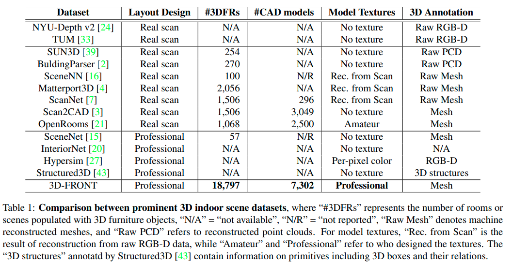
scene graph / scene text to image generation / indoor scene synthesis
<Deep-Synth> "Deep Convolutional Priors for Indoor Scene Synthesis"
[ SIGGRAPH2018 ] [paper] [code] [[web]] [ 
Brown University, Princeton University ]
[ Kai Wang, Manolis Savva, Angel X Chang, Daniel Ritchie ]
[ abcd ]
Click to expand
- Motivation
<Fast-Synth> "Fast and Flexible Indoor Scene Synthesis via Deep Convolutional Generative Models"
[ CVPR2019 ] [paper] [code] [[web]] [ 
Brown University ]
[ Daniel Ritchie, Kai Wang, Yu-an Lin ]
[ abcd ]
Click to expand
- Motivation
<3D_SLN>"End-to-End Optimization of Scene Layout"
[ CVPR2020(oral) ] [paper] [code] [video] [web] [ 
MIT:CSAIL, CMU, Stanford ]
[ Andrew Luo, Zhoutong Zhang, Jiajun Wu, Joshua B. Tenenbaum ]
[ scene graph, conditional scene synthesis, 2.5D,variational generative model， graph-based variational auto-encoders ]
Click to expand
| 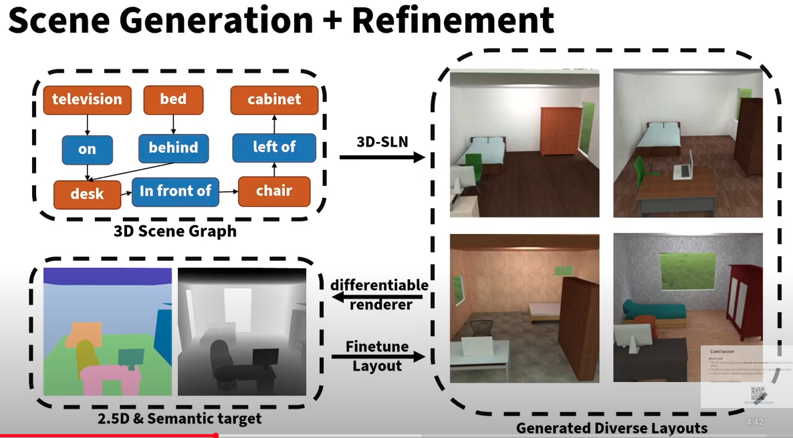 |
|---|
| scene generation + refinement |
-
Motivation
- Traditional scene graph based image generation (e.g. [CVPR2018] sg2im)
- 在image space中建模物体关系(而不是scene space)
- 没有显式的3D物体概念（只有像素）
- Layout Generation (e.g. *
[SIGGRAPH2018] Deep Convolutional Priors for Indoor Scene Synthesis*) - no spatial-conditioning
- auto-regressive 自回归 (slow)
-
Q: what?
A: 第n+1个物体的属性depend on 前n个物体的属性；序列化的结构
-
Q: what?
- 核心issues
- scene space下的3D关系
- 解耦的布局、形状、图像构成
- 基于2.5D+语义目标的object locations的refinement
-
Q: what?
A: 朝着一个target 图片/语义分割图 来用auto-decoder的形式 优化出layout
-
Q: what?
- Traditional scene graph based image generation (e.g. [CVPR2018] sg2im)
-
主要贡献
- 3D-SLN model 可以从一个scene graph生成 diverse and accurate scene layouts
- 3D scene layouts 可以用 2.5D+语义信息 finetune
- 应用展示：scene graph based layout synthesis + exemplar based image synthesis
-
数据集/数据特征/数据定义
- 物体3D model 是直接从SUNCG数据集中 retrive的；选择类别内最相似的bbox
- scene graph定义：==与我们类似==
- scene graph
y由一组triplets构成，\((o_i, p, o_j)\) - \(o_i\)代表第i-th物体的type(索引embedding) + attributes(索引embedding), \(p\)代表空间关系(索引embedding)
- scene graph
- 本文中layout的数据结构/物理含义：
- each element \(y_i\) in layout \(y\) 定义是一个 7-tuple，代表物体的bbox和竖直轴旋转：\(y_i=(\min_{X_i}, \min_{Y_i}, \min_{Z_i}, \max_{X_i}, \max_{Y_i}, \max_{Z_i}, \omega_i )\)
- 本文中latent space的定义：
- [box_emdding, angle_ambedding] (因为是VAE，所以还分了mean, var)
-
主要组件
- conditional (on scene graph) layout synthesizer
- 产生的而是3D scene layout；
每个物体都有3D bbox + 竖直轴旋转 - 把传统2D scene graph数据增强为3D scene graph，把每个物体关系编码到三维空间
- 虽然是一个encoder-decoder结构，但是generate过程其实就用不到encoder了，decoder才是关键
- 产生的而是3D scene layout；
- 集成了一个differentiable renderer来只用scene的2D投影来refine 最终的layout
- 给定一张semantics map和depth map，可微分渲染器来 optimize over the synthesized layout去 拟合 给定的输入，通过 analysis-by-synthesis fashion
- 其实就是一个auto-decoder结构，通过整个可微分通路，把sample出的layout latent反向传播最优化更新（文中称之为”refinement”/”fine tune”/”generate a layout toward a target layout”）
- conditional (on scene graph) layout synthesizer
- layout generator的网络架构
| 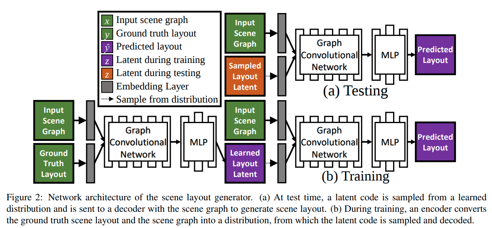 |
|---|
|
测试 时，scene graph + 从一个learned distribution 采样latent code => generate scene layout 训练 时，input scene graph + GT layout 先通过encoder提取出其layout latent (学出一个distribution)，然后用提取出的layout latent + input scene graph 生成predicted layout |
- encoder
graph LR
subgraph scene_graph[input scene graph]
relationships["relationships<br>(索引)"]
obj_type["object types<br>(索引，per-object)"]
obj_attr["object attributes<br>(索引，per-object)"]
end
subgraph encoder
obj_vecs
angle_vecs
pred_vecs
boxes_vecs
new_obj_vecs[object vector after GCN]
GCN((GCN))
obj_vecs --> obj_vecs2
boxes_vecs --> obj_vecs2
angle_vecs --> obj_vecs2
obj_vecs2 --> GCN
pred_vecs --> GCN
GCN --> new_obj_vecs
new_obj_vecs -- box_mean_var --> bbox_latent
new_obj_vecs -- angle_mean_var --> angle_latent
end
subgraph gt_layout["ground truth layout<br>(per-object)"]
bbox_gt["min_x<br>min_y<br>min_z<br>max_x<br>max_y<br>max_z"]
angles_gt["angle"]
end
obj_type -- nn.Embedding --> obj_vecs
obj_attr -- nn.Embedding --> obj_vecs
relationships -- nn.Embedding --> pred_vecs
angles_gt -- nn.Embedding --> angle_vecs
bbox_gt -- nn.Linear --> boxes_vecs
z["z [mean, var]<br>(per-object)"]
bbox_latent --> z
angle_latent --> z
-
decoder
- 注意：sample到的z拼接到obj_vecs有两种可选方式
- 可以先把z拼接到GCN之前的object vectors，然后GCN
- 也可以先GCN然后再把z拼接到GCN之后的object vectors
- 注意：sample到的z拼接到obj_vecs有两种可选方式
graph LR
subgraph scene_graph[input scene graph]
obj_type["object types (索引, per-object)"]
obj_attr["object attributes (索引, per-object)"]
relationships["relationships (索引)"]
end
subgraph layout_latent[layout latent code]
bbox_emb["bbox embedding<br>48维隐向量<br>(per-object)"]
angle_emb["rotation embedding<br>16维隐向量<br>(per-object)"]
z["z [mean, var]<br>(per-object)"]
bbox_emb --> z
angle_emb --> z
end
subgraph decoder
edge_emb[edge vector]
GCN(("GCN"))
obj_vecs[object vector]
new_obj_vecs[object vectors after GCN]
edge_emb --> GCN
obj_vecs --> GCN
GCN --> new_obj_vecs
end
z -."sample <br><br>(可能的拼接位置1)".-> obj_vecs
z -."sample <br><br>(可能的拼接位置2)".-> new_obj_vecs
obj_type -- nn.Embedding --> obj_vecs
obj_attr -- nn.Embedding --> obj_vecs
relationships -- nn.Embedding --> edge_emb
layout["layout(per-object) <br>[min_x<br>min_y<br>min_z<br>max_x<br>max_y<br>max_z<br>angle]"]
new_obj_vecs -- box_net --> layout
new_obj_vecs -- angle_net --> layout
- refinement (finetune) 过程
 |
|---|
| 类似auto-decoder结构； 通过整个可微分通路，把sample出的layout latent反向传播最优化更新（文中称之为”refinement”/”fine tune”/”generate a layout toward a target layout”） |
-
效果
- 2.5D vs. 2D
- 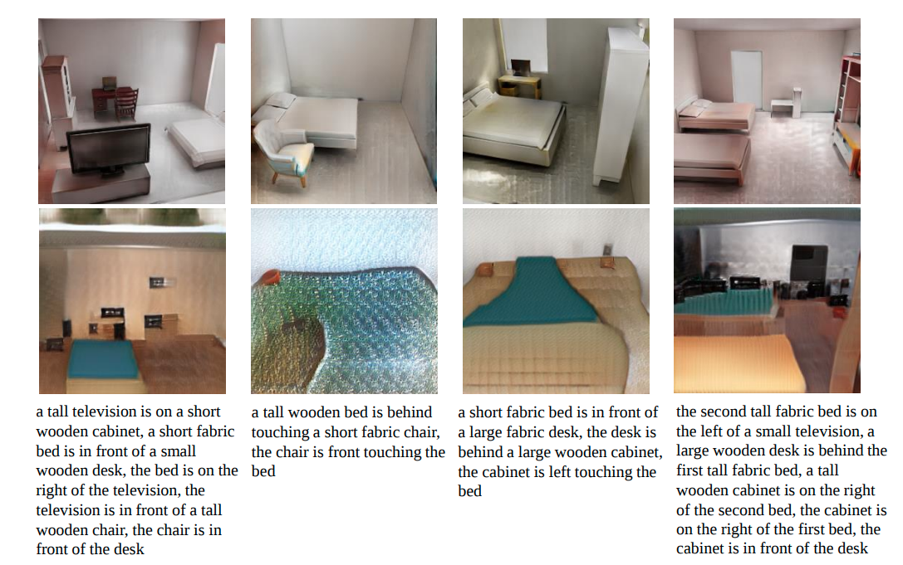
- diverse layout from the same scene graph
- 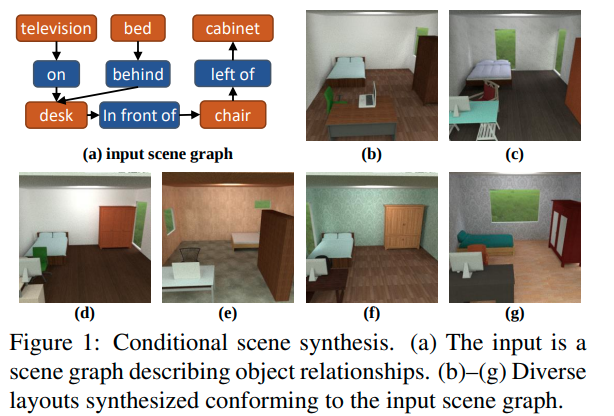
- diverse layout generation
- 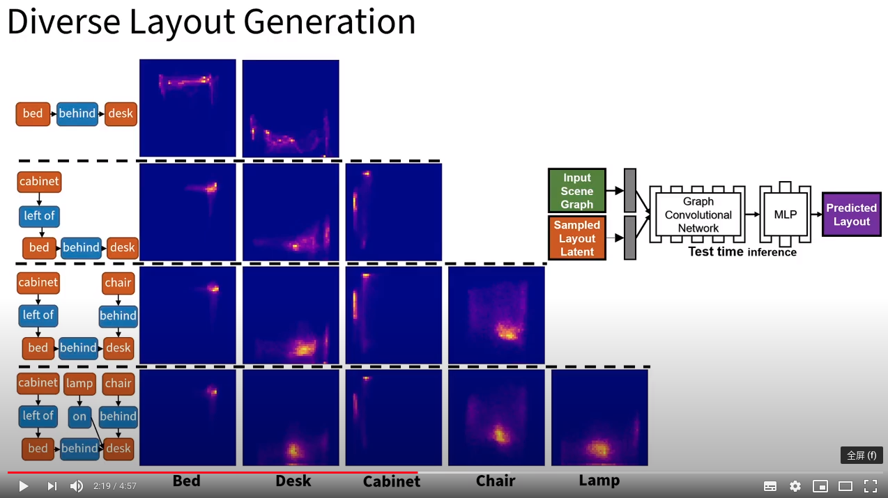
- 2.5D vs. 2D
"SceneFormer: Indoor Scene Generation with Transformers"
[ arXiv2020 ] [paper] [[code]] [[web]] [ 
TUM ]
[ Xinpeng Wang, Chandan Yeshwanth, Matthias Nießner ]
[ text description, transformer ]
Click to expand
-
review

- 对比之前的只能在地上放东西的方法，本篇还可以生成墙上、天花板上的东西，而且整体的真实性得到提到
- 3D_SLN的被引
- 笔者评价：
- 手动选择关系族确实会biased，但像这篇这样直接用隐式的transformer捕捉场景的pattern也不合适。它相当于把各种物体的信息全部揉在了一团；如果在场景中添加一个新种类的物体，模型就”傻眼”了、不可适用了；
- 比如你的数据集卧室里只有床、枕头、柜子，有人就是要往卧室摆个电视机，你能怎么办？或者用户新购买了一种模型在各种屋子都没见过的家具怎么办？如果是本篇的方法，对于这种级别的修改，要在新数据集上重新训练整个模型，这显然是不合理、有违自然的；因为新添加的物体种类只是一种增量式的更新，已经学到的知识应该是保留的。
- 比较合适的思路，应该是逐pair、逐category地考虑、建模、构建关系；
- 关系的种类数\(N\)不应是个定值；甚至可能不是一个有穷值；关系的划分，可能也不是离散的，而是连续的？是一个此起彼伏的概率密度函数？
- 手动选择关系族确实会biased，但像这篇这样直接用隐式的transformer捕捉场景的pattern也不合适。它相当于把各种物体的信息全部揉在了一团；如果在场景中添加一个新种类的物体，模型就”傻眼”了、不可适用了；
-
Motivation
-
任务描述：
- indoor scene generation: to generate a sequence of objects, their locations and orientations conditioned on the shape and size of a room.
室内场景生成任务：生成一个物体序列，包括物体的位置、朝向，conditioned on 房间的形状和大小 - 现存的大规模室内场景数据集，使得我们可以从
user-defined indoor scenes中提取出pattern，然后基于这些pattern生成新的场景 - 未来用处：生成虚拟的室内场景对于内饰供应商有商业价值：可以在AR,VR平台向用户展示，用户可以
interactively modify it
- indoor scene generation: to generate a sequence of objects, their locations and orientations conditioned on the shape and size of a room.
- 现有的方法，除了物体的位置之外，还：
- 依赖于这些场景的2D或3D外观
-
并且对物体之间的关系做出假设
- 目前有一些需要用到物体关系标注的方法，假定一族固定的、手动设计的物体之间的关系
-
本篇用transformer机制，直接从物体的raw locations和orientations来提取pattern，避免由于手动选择关系引入的bias
- 意思就是把pattern当成纯隐的来提取；
- 一个直接的例子，比如沙发和电视之间的对应\(\Delta pose\)关系，就比较隐式，文中的方法可以很好的生成
- 本篇 不使用任何外观信息，并且利用transformer机制自己学出来物体之间的关系
- 只需要输入 (空)房间的形状，还有房间的文字描述，然后就可以生成整个房间
-
任务描述：
-
dataset
- large object and scene datasets: ModelNet, ShapeNet,
- and other human-annotated scene datasets with synthetic objects / human-created scene dataset:
<SUNCG>Semantic scene completion from a single depth image. CVPR2017- 去掉bad samples, as previous works done :
- [Planit: Planning and instantiating indoor scenes with relation graph and spatial prior networks. TOG2019 ]
- [Fast and flexible indoor scene synthesis via deep convolutional generative models. CVPR2019 ]
- 最后得到 6351个卧室和1099个living room
- 卧室使用50种物体类型，客厅用39个物体类型
- 房间：用(0,90,180,270) degrees的旋转来增强数据集；位置(0,0.5)均匀分布采样
- 房间的句子描述数据用的是
heuristic的方法来产生（也就是hand-crafted）
- 去掉bad samples, as previous works done :
-
Overview
-
auto-regressive自回归方式：第\((n+1)^{th}\)物体的属性 conditioned on 前n个物体的属性 - 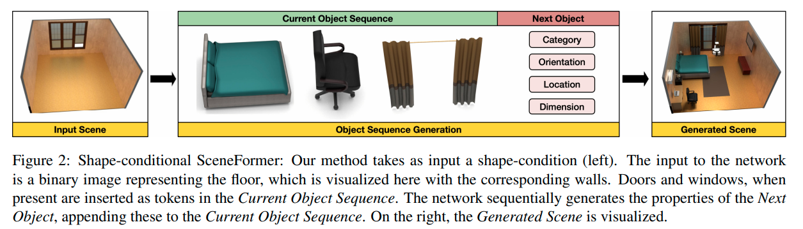
- 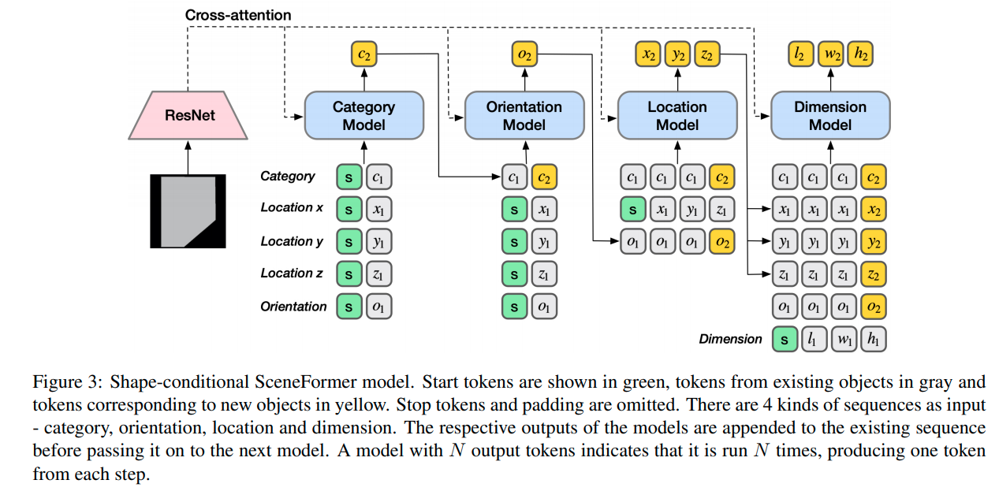
-
-
results
- 如果没有给出房间形状，则用一个room-shape prior来放置物体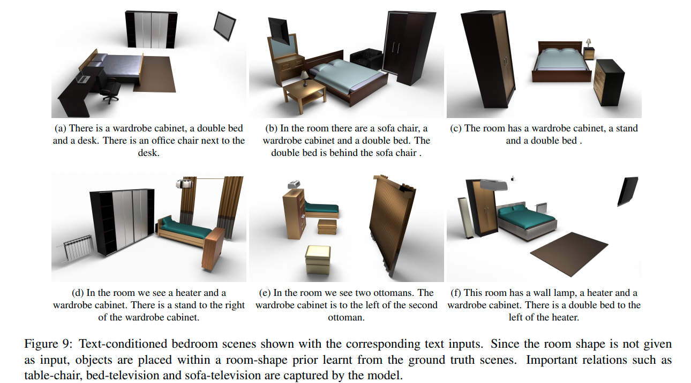
-
future work
- 可以用于真实场景的3D重建
"Learning Canonical Representations for Scene Graph to Image Generation"
[ ECCV2020 ] [web] [paper] [code] [ 
Tel Aviv University, UCB, Bar-Ilan University ] [ 
NVIDIA ]
[ Roei Herzig, Amir Bar, Huijuan Xu, Gal Chechik, Trevor Darrell, Amir Globerson ]
[ semantic equivalence ]
Click to expand
-
Motivation
- 过去的sg2im的一个不足是不能捕捉graphs中的语义等价性(semantic equivalence)
- 即：同样一张图片可以用多个逻辑上等价的SG来表述
- 所以提出从数据中学习出canonical graph representations
- 主要展示3个数据集：visual genome, COCO, clevr
- 过去的sg2im的一个不足是不能捕捉graphs中的语义等价性(semantic equivalence)
-
Overview
- SG to canonical weighted SG
- weighted SG to layout
- layout to image
-
Scene Graph Canonicalization
- transitive relation, converse relations
-
效果
- 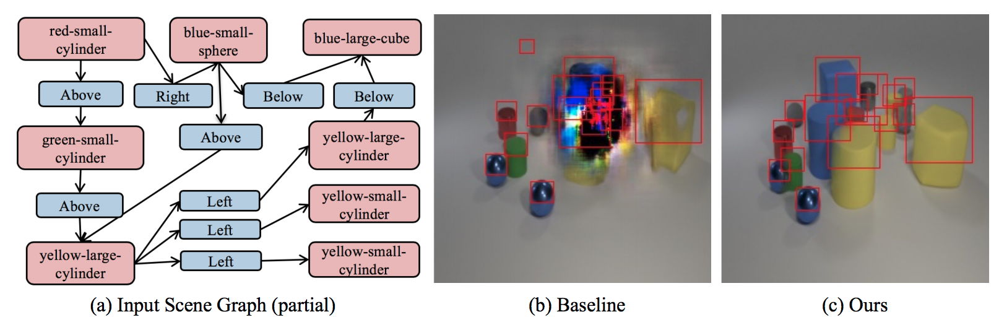
capsule networks
- keywords
- Google scholar - GE Hinton
"Stacked Capsule Autoencoders"
[ NeurIPS2019 ] [paper] [code] [ 
Oxford ] [ 
Google Brain, DeepMind ]
[ Adam R. Kosiorek, Sara Sabour, Yee Whye Teh, Geoffrey E. Hinton ]
[ capsule networks ]
Click to expand
-
Motivation
- 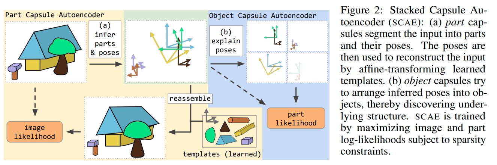
"Canonical Capsules: Unsupervised Capsules in Canonical Pose"
[ arXiv2020 ] [paper] [[code]] [ 
University of British Columbia, University of Toronto, University of Victoria ] [ 
google ]
[ Weiwei Sun, Andrea Tagliasacchi, Boyang Deng, Sara Sabour, Soroosh Yazdani, Geoffrey Hinton, Kwang Moo Yi ]
[ capsule network, 3D pointclouds, Canonical ]
Click to expand
-
Motivation
- unsupervised capsule architecture for 3D point clouds
- 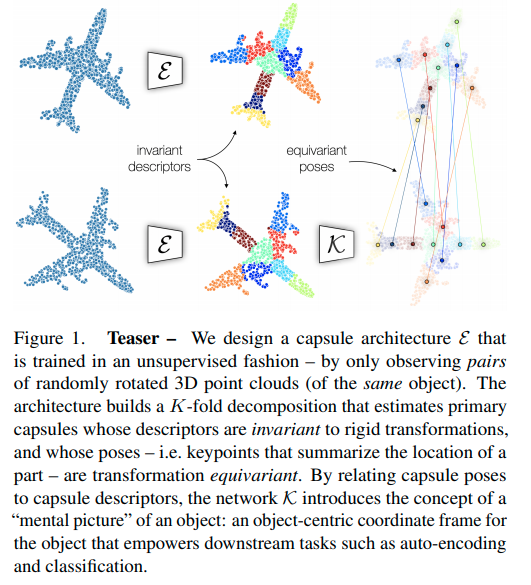
-
overview
- 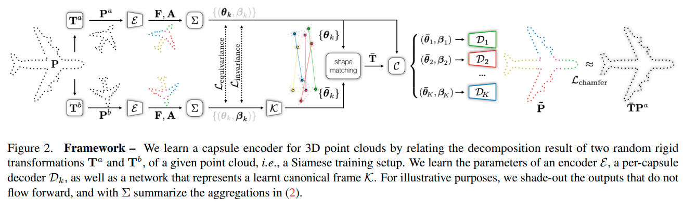
- decomposition
- 把点云\(\boldsymbol{P} \in \mathbb{R}^{P \times D}\)用一个encoder计算出K-fold attention map \(\boldsymbol{A} \in \mathbb{R}^{P \times K}\)和逐点的feature \(\boldsymbol{F} \in \mathbb{R}^{P \times C}\)
- 然后计算\(k\)-th capsule的pose \(\boldsymbol{\theta}_k \in \mathbb{R}^3\) 和对应的capsule descriptor \(\boldsymbol{\beta}_k \in \mathbb{R}^C\)
- \[\boldsymbol{\theta}_k = \frac {\sum_p A_{p,k}P_p} {\sum_p A_{p,k}}\]
- \[\boldsymbol{\beta}_k=\frac {\sum_p A_{p,k}F_p} {\sum_p A_{p,k}}\]
- 其实就是attention map加权和后的点坐标和attention map加权和后的点feature
- canonicalization
- 单纯地保证不变性和等变性并不足以学出一个object-centric的3D表征，因为缺乏一种(无监督)的机制来==bring information into a shared "object-centric" reference frame==
- 并且，一个”合适”的canonical frame其实就是一个convention，所以我们需要一个机制让网络做出一个选择——并且必须在所有物体中都是一致的
- 比如，一个沿着+z轴放置的飞机和一个沿着+y轴放置的飞机是一样好的
- 为了实现这一点：link the capsule descriptors to the capsule poses in canonical space；i.e. ask that objects with similar appearance to be located in similar Euclidean neighborhoods in canonical space
- 具体做法是用一个全连接层，从descriptor直接回归出每个capsule的pose
- \(\overline{\theta}=\mathcal{K}(\beta)\)
\(\overline{\theta} \in \mathbb{R}^{K\times 3}\)是canonical poses，
\(\mathcal{K}\)是全连接神经网络，
\(\beta \in \mathbb{R}^{K \times C}\) 是capsule的descriptor - Q: why?居然直接从K个胶囊描述子直接回归出K个canonical pose
"Unsupervised part representation by Flow Capsules"
[ arXiv2020 ] [paper] [[code]] [ 
University of Toronto ] [ 
Google ]
[ Sara Sabour, Andrea Tagliasacchi, Soroosh Yazdani, Geoffrey E. Hinton, David J. Fleet ]
[ capsule networks, motion cue ]
Click to expand
-
Motivation
- capsule networks不能高效地学到low level的part descriptions
- exploit motion as a powerful perceptual cue for part definition
用运动作为一个部件定义的有力的感知线索
- results
- 从复杂背景中找出来原来的三角形、正方形、圆形等
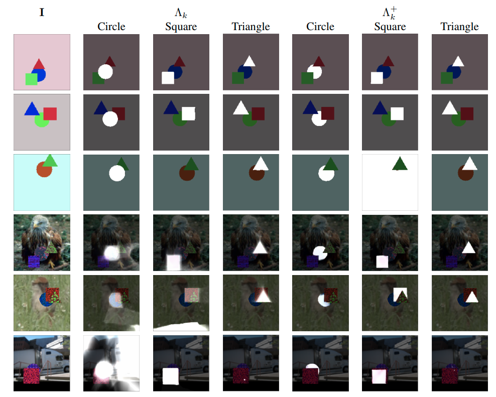 - 对于运动的人学出来的部件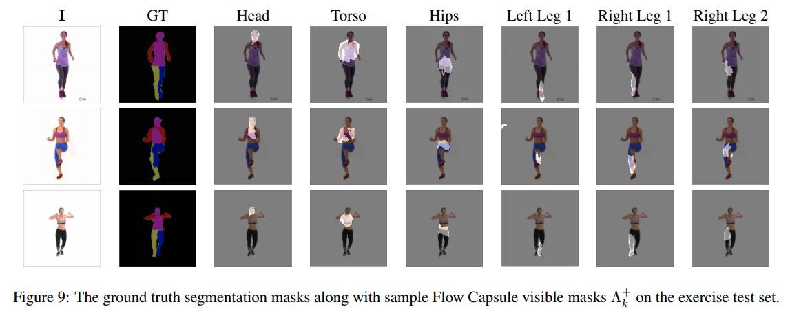
- 从复杂背景中找出来原来的三角形、正方形、圆形等